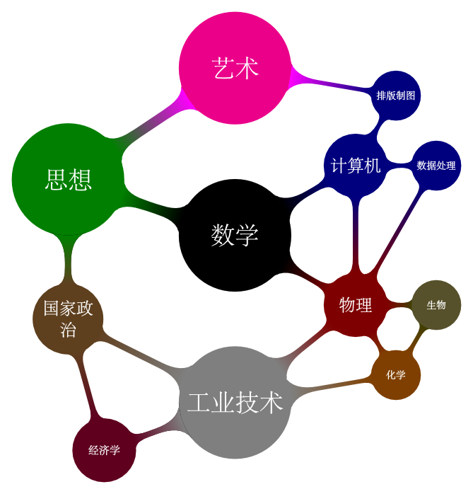

前言
1 人为什么活着
未经反思自省的人生不值得活。——苏格拉底
记得在我读高一的时候，我和我的同学们在上晚自习。大家都在复习，而我也在复习历史。因为马上就要考试了。在我记着各种各样历史年代和名词的时候，我累了。背靠着后面的桌子，头望着那混浊的日光灯。突然脑子里蹦出一个奇怪的问题：“人活着为了什么？”。这个问题在后来的人生时隐时显，但一直都还在那里。
我的灵魂孤寂而又高傲，人生有很多事情我竟大多是事后才知晓，总是稀里糊涂地过着日子，一颗好玩的心从没改变过。包括我在知识上的思想上的那种狂热，亦不过是一个孩子心使然。我本应过早地知道死亡的意义，但我没有。而那时我本应像大家一样专心学习，却一再去追寻这死亡的意义。
在高二的时候，我读书求知几乎达到疯狂的境地，从早自习起我就手捧着一本书，上课的时候我也“悄悄地”在读，到晚上有的时候我甚至手捧个书直到半夜。别人都在外面打篮球，而我却依然体弱多病，为的就是看别人是怎么想的，看别人是怎样活的。那个时候我的自我意识刚刚萌发，愚昧地相信着绝对自由意志论，我坚信我能决定我的一切。所以那个时候我有一句话：“我想怎样活就怎样活。”对！生活，整个人生，多么幸福灿烂的人生摆在我的面前，以至那时我觉得，几辈子也活不完啊！
我并不是一个十分合群的人，不过这也似乎解释不了我独特的阅读兴趣，但无疑那时我力图使自己成为一个高雅的人。时下流行的玄幻小说我一本都没看过，我喜好名人传记和哲学小品。那种内心的坦白和真诚深深地吸引了我。以至到现在我都是这么认为的，人第一要紧的是真诚！
我看书的时候完完全全忘记了自己。自己的一切。以至我经常觉得书中的主人公太像我了。而在阅读别人的思想言论时，我更是设身处地地为别人着想，让别人的思想如野马一般在我的脑海中驰骋。
我的模仿性是如此之强，所以有一天，我在教师里看书。一个漂亮的女孩和一个男孩子在我旁边说说笑笑。
我抬起了一张忧郁的老脸，一本正经地说道：尔等系良家女子，自应言检行慎，不应为区区小事而狂笑不止。自然吾诘难尔等，非显吾心境之不佳，实为尔等着想也。1
谁不是从模仿开始自己的人生旅程的呢？
2 活出意义来
但我们不可能一辈子永远去模仿别人的人生（别人的成功，荣耀，庸俗或者堕落。）人们活得越久就越发现自己是一个和地球上任何一个，和自古以来的任何一个人类都不相同，而每一个人都必须选择一种自己的活法，这可比简单的模仿别人的人生要难的多了。
我遇到这样的一个人，他（她）告诉我我没有什么特别的追求，就希望简单生活，吃好点穿好点。我是个多么不讨人喜欢的人呵，我直截了当地指出：希望生活简单点，吃好点穿好点，这些都不是追求，这是人的本性，因为是人都希望少动点脑子，吃好点穿好点，所以这些都算不上追求。
模仿别人重复别人或者将人的本性提升到追求的高度都不助于人精神层面的升华（没有这种升华人的灵性就缺少某种感动，人的灵魂就缺少力量。），你们看啊，四周的植物动物，他们都遵循着自己的本性，只有人不同，人与人之间长相都差不多（一个脑袋两个胳膊），但你根本无法越测他下一秒将会干什么，因为他有着丰富的内心的世界。
把不同的人放在相同的环境中，比如说牢笼中，他们的反应也会完全不同的。是的，我现在谈论的就是人身上具有的一种潜能，那就是超越自身本性超越周遭环境的潜能。人性，不是动物性的加强版，人，因为具有智慧，超越了动物短视的视角，从而获得一种跨越空间和时间的视角，在这种视角之下，人的存在意义，就绝不是为别人给予或者别人指定的，也不是环境命定的，而是自身寻求的。
关于读者您的运命和存在的意义，我不能说的更多了。这里我也不会谈及宗教或者其他哲学，只是这样简单而肯定地告诉你，不要试图模仿和复制别人的人生，想一想你横跨寰宇从古到今都找不到一个和你一模一样的存在，如何你去简单模仿和复制别人的人生，那是多么的浪费呵（而且极易失败）。请用您自己的头脑思考人生，了解自己认识自己，活出您自己人生的意义吧。2
3 科学知识体系
我一直对科学类思想类书籍都挺感兴趣的，到我大概大三的时候脑子里就有了一个雄心壮志，就是想写一本书，书名叫“人类知识体系纲要”，希望这本书将我所学的所有的科学知识都汇总起来。现在看来这个计划似乎过于庞大了，唯一的结果就是我做了下面一个挺漂亮的图，还打算印在T恤上。。
